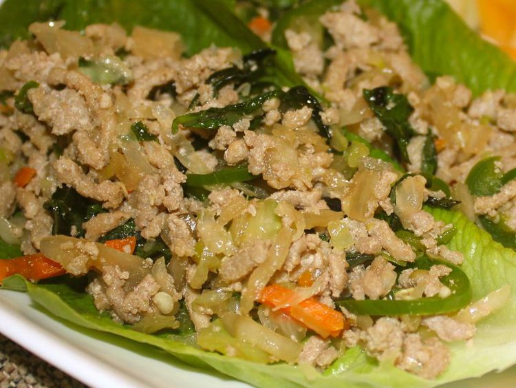

Thai Ground Chicken Basil
Home
Original Recipe

Description
This delicious recipe most closely resembles my favorite Thai restaurant's Ground Chicken Basil. I've searched for recipes, but none gave this authentic taste. It's quick and easy, too! Serve with steamed rice if you like.
Ingredients
- 2 tablespoons peanut oil
- ¼ cup minced garlic
- 1 pound ground chicken breast
- 12 Thai chiles, sliced into thin rings
- 2 teaspoons black soy sauce
- 2 tablespoons fish sauce
- 1 cup fresh basil leaves
Steps
Step 1
- Heat a wok over high heat until smoking. Pour in peanut oil, then immediately add garlic. Stir-fry garlic until it begins to turn golden brown, about 20 seconds. Mix in the ground chicken and continue cooking and stirring until the meat is crumbly and no longer pink, about 2 minutes.
Step 2
- Stir in the sliced chilies, soy sauce, and fish sauce. Cook for about 15 seconds to soften the chilies, then add the basil, and continue cooking until the basil has wilted.